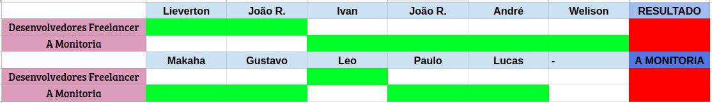

DEFINIÇÃO DE TEMA
Histórico de revisão
| Data | Versão | Descrição | Autor(es) |
|---|---|---|---|
| 18/08/19 | 0.1 | Adiciona Design Sprint | Welison Regis |
| 19/08/19 | 0.2 | Incrementa metologia e referências | Welison Regis |
| 22/08/19 | 0.3 | Adiciona tópicos de introdução e decisão do tema | Lieverton Silva e Welison Regis |
| 23/08/19 | 0.4 | Incrementa mapa mental sobre metodologia e visão geral | Welison Regis |
| 23/08/19 | 0.5 | Coloca tópico de decisão de tema | Welison Regis |
| 23/08/19 | 0.6 | Descreve todos os detalhes acerca dos artefatos desenvolvidos | Welison Regis |
| 23/08/19 | 0.7 | Adiciona texto no mapa mental sobre metodologia | Welison Regis |
| 23/08/19 | 1.0 | Gera primeira versão do documento de design sprint | Welison Regis |
Introdução
O atual documento utiliza-se da metodologia de design sprint proposta pela Google Ventures. A design sprint desenvolvida nesse documento possui dois principais objetivos: definir o tema adotado pelo grupo e começar a desenvolver as ideias e os artefatos iniciais do projeto escolhido e, para atingir tais objetivos, utiliza-se de recursos que dão suporte ao entendimento do problema, auxiliam a tomada de decisões e corroboram com o desenvolvimento do projeto.
Metodologia e Visão Geral

Durante o período de cinco dias entre as datas 19/08/2019 e 23/08/2019 o grupo de número 05 esteve focado em responder quatro vertences essenciais acerca do projeto a ser desenvolvido: metodologia de integração da equipe, metodologia de trabalho no github pages, padronização das atividades realizadas e escolha de tema junto aos artefatos a ser elaborados.
Nesse sentido, tomou-se para a metodologia as seguintes ferramentas: telegram para realizar contato rápido; discord para pareamentos com aúdio, texto, vídeo e transmissões de telas; Visual Studio Live Share para facilitar o pareamento, permitindo que o par possa trabalhar sob um mesmo ambiente (o que auxilia muito em escrever textos em markdown); google drive para rastrear e guardar artefatos; issues no github como forma de organização; e bot no discord para informar o andamento das issues do repositório.
Além disso, o grupo procurou manter uma metodologia consistente em relação a produção dos artefatos disponibilizados no GitHub Pages do projeto. Portanto, definiu-se um deploy contínuo, sendo subsidiado por container docker do ambiente mkdocs material com todas as extensões (supersets) de markdown disponíveis, além de Makefile para facilitar a execução de comandos e deploy realizado na master pela ferramenta Travis CI.
Design Sprint
Definição
Decorrente da necessidade de alinhar o time de trabalho sob uma visão compartilhada de metas e resultados claramente definidos, e a ânsia da redução do tempo de produção de um produto, surgiu-se o conceito de design sprint.
Conceito de Design Sprint
A design sprint, inicialmente proposta pela Google Ventures, é um método usado para resolver problemas por meio de idealização, prototipagem e teste de ideias em um curto espaço de tempo.1
Etapas

As etapas de uma Design Sprint podem ser classificadas como abaixo2:
- Fase de entendimento (understand): qual a necessidade do cliente ou da empresa? quais as capacidades tecnológicas?
- Fase de definição (define): qual é a estratégia chave e o foco do produto?
- Fase de divergência (diverge/sketch): como explorar o máximo de ideias distintas?
- Fase de decisão (decide): selecione a melhor ideia até então.
- Fase de prototipação (prototype): Crie artefatos que permitam testar as ideias com os usuários.
- Fase de validação (validate): Teste as ideias com usuários, stakeholders e especialistas técnicos.
Artefatos desenvolvidos
Por consenso, o grupo avaliou que seria mais prudente avaliar as três melhores ideias de projetos, disponíveis e votadas em issue no GitHub, e então prosseguir com o desenvolvimento de um tema. Portanto, elencou-se as como as principais ideias os projetos "UnB Spotted", "Freelancer" e "A Monitoria". Abaixo consta os artefatos desenvolvidos para a devida tomada de decisão sobre o tema e, posteriormente, encontra-se artefatos produzidos que dão subsídio ao tema escolhido.
Understanding, define, sketch
Para melhor compreensão e definição dos temas propostos, reservou-se a aplicação da fase understanding, fase define e fase sketch. Portanto, para corroborar com o entendimento dos temas e a discussão coletiva, contruiu-se os seguintes artefatos:
Clique sobre o nome para acessar o(s) artefato(s)
Rich Picture
Clique sobre o nome para acessar o(s) artefato(s)
5W2H
Decision
Para a decisão sobre qual é a melhor ideia proposta, o grupo recorreu a uma reunião para a tomada de decisão. Teve-se como base da discussão as causas que poderiam acarretar no fracasso do produto, isto é, tentou-se responder a seguinte pergunta: "O que poderia causar o fracasso do produto?". Logo, elaborou-se os seguintes artefatos:
Clique sobre o nome para acessar o(s) artefato(s)
Diagrama de Ishikawa
Decisão do tema
Após a elaboração dos artefatos necessários para entender as sugestões de temas e os seus problemas, decidiu-se fazer uma reunião via Discord para a decisão do tema (aúdio disponível) e os artefatos a ser desenvolvidos.
Aúdio de discussão e definição do tema
Aúdio de decisão do tema: Decisão do Tema.
Tópicos abordados:
- Problematização acerca dos temas;
- Sugestões e discussões sobre as ideias propostas;
- Possíveis dificuldades que os projetos encontrariam;
- Votação do tema;
- Definição dos futuros artefatos elaborados.
A partir da discurssão realizada, chegou-se a conclusão da não atratividade sobre o projeto "Spotted", pois o escopo da aplicação não era interessante para o grupo, além de questões acerca da aplicabilidade da ideia em relação ao processamento (match) de perfis faciais de pessoas.
Portanto, a escolha final foi baseada sobre os temas mais viáveis: "A monitoria" e "Freelancer". Conforme votação abaixo, a aplicação desenvolvida será "A monitoria" com 8 votos de um total de 11 participantes.

Prototype e Validate
Após definido o tema, o grupo partiu para uma análise minuciosa acerca das necessidades e requisitos que abarcam a aplicação pretendida. Portanto, procurou-se analisar as ideias e soluções dos concorrentes através de um benchmarking:
Clique sobre o nome para acessar o(s) artefato(s)
Benchmarking
Além disso, procurou-se opiniões e sugestões do público-alvo (estudantes da FGa, Gama) através de um formulário, disponibilizado em grupos da faculdade. A prévia do formulário pode ser conferida clicando no seguinte link:
Clique sobre o nome para acessar o(s) artefato(s)
Questionário
Para alinhar o time que participa no atual projeto, desenvolveu-se um documento de visão com o objetivo de melhor definir uma visão geral dos fatores que circundam a aplicação. Documento de visão:
Clique sobre o nome para acessar o(s) artefato(s)
Documento de visão
Por fim, realizou-se uma última reunião para definir constantes de custo e demais questões relacionadas a estimativa de custo através método COCOMO. Estimativas de custo:
Clique sobre o nome para acessar o(s) artefato(s)
Estimativas de custo
Tendo como base toda a discussão acima, pode-se elaborar uma primeira versão de um protótipo do que se pensa sobre a aplicação no presente momento (23/08/2019). Protótipo do projeto "A Monitoria":
Clique sobre o nome para acessar o(s) artefato(s)
Protótipo de baixa fidelidade
Referências
-
DESIGN SPRINT ACADEMY. . In: DESIGN SPRINT ACADEMY. What is a Design Sprint. [S. l.]: Design Sprint Academy, 8 jan. 2019. Disponível em: https://designsprint.academy/design-sprint-3-0/. Acesso em: 19 ago. 2019. ↩
-
DIREKOVA, Nadya. Design Sprint Methods: Playbook for start ups and designers. Mountain View: [s. n.], 2015. Disponível em: https://www.garage2020.nl/wp-content/uploads/2017/01/DesignSprintMethods.pdf. Acesso em: 19 ago. 2019. ↩